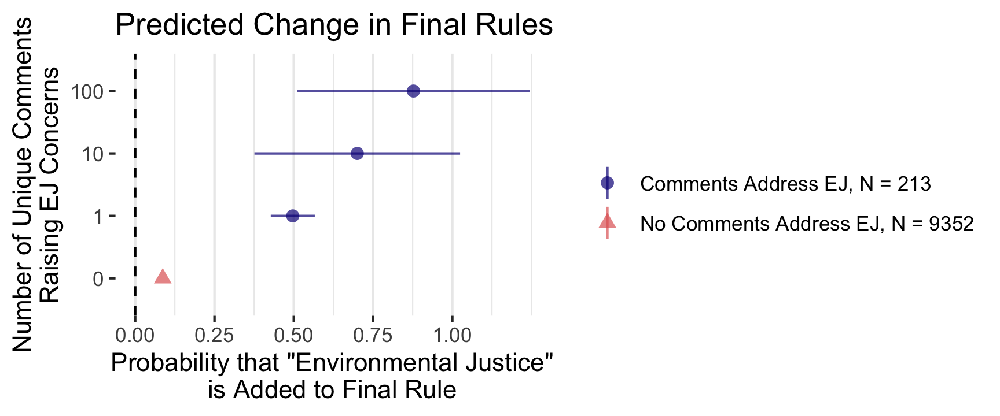

Making Policy in the Executive Branch: Money, Expertise, Issue Framing, and Public Pressure
Devin Judge-Lord
University of Michigan
Ford School of Public Policy
Today’s talk
- Emissions (bad news)
- Technology (good news)
- Public opinion (good news)
How to think about recent policy changes
How the U.S. federal government makes policy
How money and lobbying affect policy
How advocacy and fights over issue framing affect policy
- e.g., what counts as “climate policy” and what counts as “environmental justice?”
Key terms
Federalism: Authority divided between a sovereign federal government and sovereign state and tribal governments
Separation of Powers: Authority to legislate, execute legislation, and adjudicate disputes in separate coequal branches.
veto point: A person who can say no
public policy: statements of what government intends to do
- Legislation
- Executive Order
- Agency Rulemaking
- Court opinion
industrial policy: policy aimed at shaping the economy, especially what is produced and where
stranded assets: things you can no longer sell
political economy: explanations of behavior rooted in how economic power shapes political behavior and how
political power shapes economic behavior
lobbying: any effort to influence policy
issue frame: a way of thinking about an issue; a set of associations in one’s mind or in public discourse
Why understanding agency rulemaking matters
Large majorities want stronger environmental policy and more sustainable energy
Massive youth and activist energy behind climate and environmental justice
Policy fights don’t end with legislation
But agency policymaking is technocratic
\(\rightarrow\) hostile terrain for mass politics and activism
\(\rightarrow\) good for incumbent industries
How the U.S. federal government makes policy
10% Legislation, 90% Agency Rulemaking
Initiating events:
- New legislation from Congress
- New president
- Court order
- Changes in perceived problems
- New technologies
- Environmental conditions/disasters
- Advocacy & Lobbying
Agencies make 90% of U.S. law
- Power plant, manufacturing, & vehicle emissions (EPA)
- Environmental review & impact statements (CEQ)
- Fisheries inspections & catch limits (NOAA-NMFS)
- National Marine Sanctuaries (NOAA-NOS)
- Endangered Species Act listings (NOAA-NMFS/DOI-FWS)
- Organic certification requirements (USDA-AMS)
- Offshore oil and gas drilling (BOEM)
- Pipeline safety (DOT-PHMSA) & transit grants (DOT-FTA)
- Nuclear power plant safety and evacuation plans (NRC)
- Energy, manufacturing, & hydrogen tax credit eligibility (IRS)
- etc.
The Inflation Reduction Act fight isn’t over
“energy community”.
\(\rightarrow\) already 300+ pages of guidance from Treasury & maps from DOE
“disadvantaged community”
\(\rightarrow\) “a community that the Secretary determines [is] disadvantaged”
“life cycle emissions”
\(\rightarrow\) $0 – ∞ billion for hydrogen
“facility”
\(\rightarrow\) 0 – massive reductions in methane
How Lobbying Works
“quid pro quo” vs. “subsidy” vs. “capture” lobbying
Money buys allies in Congress who pressure agencies
(Results from Powell, Judge-Lord, & Grimmer, 2023)
Money buys allies in Congress who pressure agencies

(Results from Powell, Judge-Lord, & Grimmer, 2023)
Agency rulemaking tilts toward the rich
Agency rulemaking tilts toward the rich
(Results from Carpenter et al., “Inequality in Administrative Democracy”)
Why?
\(\rightarrow\) Big companies hire experts and lawyers
“information capture”

(Results from Carpenter et al., “Inequality in Administrative Democracy”)
Advocacy
Pressure results from organized campaigns. Of 58 million public comments on proposed agency rules, 2005-2020
- The top 100 organizations mobilized 43,938,811 - The top 10 organizations mobilized 25,947,612
| Organization | Rules Lobbied On | Comments |
|---|---|---|
| NRDC | 530 | 5,939,264 |
| Sierra Club | 591 | 5,111,922 |
| CREDO | 90 | 3,019,150 |
| Environmental Defense Fund | 111 | 2,849,517 |
| Center For Biological Diversity | 572 | 2,815,509 |
| Earthjustice | 235 | 2,080,583 |
Agencies respond to larger coalitions

Agencies respond to larger coalitions
When does public pressure affect agency rulemaking?
Campaigns succeed when
- They have broad public support & showing support is easy
- They shift the terms of debate or mobilize elected officials
- Framing values-based decisions as scientific may hurt more than it helps.
They have experts and lawyers
The agency has capacity (e.g., to address climate or environmental justice issues)
Issue Framing
“He who determines what politics is about runs the country because the definition of conflicts allocates power.” - E.E. Schattschneider
“Environmental justice means something different in every context” - Monique Harden
Executive Order 12898
Federal Actions to Address Environmental Justice in Minority Populations and Low-Income Populations (1994)
“each Federal agency shall make achieving environmental justice part of its mission by identifying and addressing, as appropriate, disproportionately high and adverse human health or environmental effects of its programs, policies, and activities on minority populations and low-income populations”
Executive Order 14096 (2023)
“a whole-of-government commitment to environmental justice”
An Empirical Study of Issue Framing
Preview: Part 1
Large-scale analysis: all 15,000 draft and final rules from 52 agencies 2005-2024 & 50,000,000 comments on these rules
- Policy rarely addresses environmental justice
- Agencies add EJ language when pressured
- \(\uparrow\) pressure \(\rightsquigarrow\) \(\uparrow\) change
- Puzzlingly little variation over time in baseline rates of addressing EJ and responsiveness to requests to do so
- Yet, agencies were most responsive under Biden
- Responsiveness varies with institutional structure
Preview: Part 2
Medium-scale hand-coded sample of all 11,000 comments from organizations on 200 rules.
- adding EJ language may correlate with substantive policy change favoring public interest groups (“lobbying success”)
- mostly Big Greens using generic EJ language
- radically different meanings of EJ across commenters and administrations
(Judge-Lord, “Making Policy About Distributive Justice”)
Example: Mercury From Power Plants
1990 Clean Air Act: EPA shall regulate as “appropriate and necessary” for public health
Safe Levels of Mercury (For Whom?)
2004 Draft Rule:
“The U.S. population”- 170,000 public comments
2005 Final Rule:
"Environmental justice" for “minority populations”


The Environmental Justice Frame
Why does this matter?
“Environmental” policy debates are rarely about distributions of costs and benefits
- Reframing policy in distributive justice terms can shape normative, political, and economic analysis.
For this research: “environmental justice” is a distinct phrase (few false positives) without many synonyms (few false negatives)
Scholars of bureaucracy focus on technical information
. . .
How might political information matter?
- Advancing frames about who is affected/deserving?
- Novelty vs. legibility?
- Pressure:
- Coalition size? (Dwidar 2021, Nelson & Yackee 2012)
- Public attention?
Little variation in rates of addressing EJ Across Administrations
Figure 1: Proposed and Final Rules by Whether they Mention Environmental Justice
(Judge-Lord, “Making Policy About Distributive Justice”)
Large variation in rates of addressing EJ Across Agencies
Figure 2: Proposed and Final Rules by Whether they Mention Environmental Justice
(Judge-Lord, “Making Policy About Distributive Justice”)
Getting policymakers talking about climate & environmental justice


Getting policymakers talking about climate & EJ
From 2005 to 2020
8% of relevant agency rules addressed climate change, 15% mentioned EJ
20% of all public comments mentioned climate change, 12% mentioned EJ
1000 supporters = ~ 65 percentage point increase in the probability that the agency addresses climate change, 46 percentage point increase that the agency addresses EJ
Responsiveness is surprisingly stable across administrations but varies wildly across agencies
Variation in responsiveness to comments
Logit (N = 11,315 rules)
(Judge-Lord, “Making Policy About Distributive Justice”)
Little variation in responsiveness to comments

Figure 3: Responsiveness to Pressure to Address Environmental Justice where the Proposed Rule Did Not Mention Environmental Justice (Logit, N = 11,315 rules)
(Judge-Lord, “Making Policy About Distributive Justice”)
Agencies that more often address EJ are more responsive to comments demanding attention to EJ
Logit (N = 11,315 rules)
(Judge-Lord, “Making Policy About Distributive Justice”)
Agencies respond to larger coalitions demanding attention to EJ
Logit (N = 11,315 rules)
(Judge-Lord, “Making Policy About Distributive Justice”)
Part 2: Motivation
Similarities across administrations in baseline rates of considering EJ and responsiveness to public pressure mask radically different definitions of environmental justice.
Preliminary Findings from Hand-Coded Comments
When agencies adopt EJ language, environmental coalitions do better
Cross-sectional OLS model of coalition-level lobbying success
(N = 284)

When agencies adopt EJ language, environmental groups do better
Within-organization (DiD) OLS model (N = 3,932 organizations)

Which groups win?
How to interpret advocacy group adoption/cooption of EJ rhetoric?
A contested and expanding frame:
- Any inequality across space, time, or identity group
- Dominated by Big Green advocacy for non-targeted polices
- Increasingly used by those who are not historically marginalized (because all policy has disparate effects)
Much more focused on substantive than procedural justice and rarely on enforcement
Claims about unequal spatial-temporal distributions of environmental harms
Place-based EJ Groups:
- Hotspots caused by averaging or trading among pollution sources \(\rightsquigarrow\) less pollution reduction (local EJ groups)
- Cumulative impacts caused by multiple co-located harms
- Permitting decisions should account for nearby facilities that impact the same area
- Cumulative impacts caused harms that persist over time
- Permitting decisions for a facility should account for historic or naturally occurring harms
- EJScreen, MiEJScreen
Big Greens - Unequal baselines \(\rightsquigarrow\) any overall reduction of pollution disproportionately benefits burdened communities, even when policy does not target them
Claims about unequal spatial distributions of environmental harms
Many groups don’t even assert marginalization or historic oppression.
Smoke from such wildfires substantially impacts public health. These serious health impacts are an environmental justice issue that many rural counties throughout Oregon face because of the federal government’s failure, or inability, to responsibly manage forests due, in large part, to unnecessary and/or unwarranted restrictions that all center around the spotted owl… (Douglas County, 2008)
Identity groups
In addition to geographic-based inequality, commenters raise inequalities linked to identities, including race, gender, age, and sector of employment.
People from disadvantaged populations are more likely to be employed in occupations with higher levels of exposure (e.g., mining, construction, manufacturing, agriculture, and certain service sector occupations) and to live in more highly contaminated communities. The reality of this unequal burden is not just a health issue, but an issue of environmental justice. While all Americans now carry many foreign chemicals in their bodies, women often have higher levels of many toxic and hormone-disrupting substances than do men…Children of all ages are considerably more vulnerable than adults… (The President’s Cancer Panel)
Intersections of space and identity
Language and culture overlap with specific geographies, especially with Native lands. Native commenters frequently assert harm to certain locations as harm to their culture.
Cumulative impacts at home and at work
How should we interpret agency adoption of EJ rhetoric?
Mostly rebutting or dismissing complaints (most officials do not consider EJ analysis to be part of their job) with boilerplate EJ language asserting “no adverse effects on low-income or minority populations”
But, some meaningful policy changes under all presidents
But, mostly non-targeted policy advanced by historically white national advocacy groups (e.g., pollution limits, safety, public lands, marine sanctuaries)
But, some targeted policy (catch limit exemptions, tribal consultation)
Dismissing the need for EJ analysis
If the trend is in the right direction, the future is to be better than the past, and thus, comparative analysis of alternative futures with and without the policy is not needed.
EPA believes that the power sector is already on the path to achieving the CO2 reductions required by the CPP. Therefore, the EPA does not believe it would have any significant impact on EJ-affected communities. (EPA-HQ-OAR-2017-0355, 2019)
The Biden EPA used a similar logic:
…there is potential for some geographic areas and demographic groups to experience small increases in ozone concentrations relative to the baseline levels, which are projected to be substantially lower than today’s levels. (EPA-HQ-OAR-2023-0072-8244, 2024)
Offsetting benefits and harms
From the Trump administration’s repeal of the Clean Power Plan EJ analysis:
While the EPA expects areas in the southeastern US to experience a modest increase in fine particle levels, areas including the Midwest will experience reduced levels of PM, yielding significant benefits in the form of fewer premature deaths and illnesses. On balance, the positive benefits of this action significantly outweigh the estimated disbenefits.
\(\longrightarrow\) allows local pollution hot spots
Citing limits on unequal harms
The Biden EPA addressed EJ complaints that emissions trading could lead to pollution hot spots but asserted that the policy included backstops intended to limit inequalities:
The EPA is cognizant of these concerns and believes that emission trading and averaging are not necessarily incompatible with environmental justice. The EPA is including limitations on the use of compliance flexibilities in state plans that should help address these EJ concerns.
Similarly, the Bush EPA cited other policies as backstops, arguing that deregulating hazardous air pollution would have no effect on nearby minority and low-income communities because polluters were still required to have a plan.
“The only difference from current regulation is that the source is not required to follow the plan.” EPA-HQ-OAR-2004-0094: National Emission Standards for Hazardous Air Pollutants: General Provisions: Impacts
Co-opting the frame
Consumer prices as an environmental justice issue
Low-income and minority communities located in proximity to EGUs may have experienced an improvement in air quality as a result of the emissions reductions. However, the EPA did not address the potential distribution of compliance costs associated with the CPP…Low-income households typically spend a greater share of their household income on energy, and to the extent that this action reduces energy costs, those low-income households will experience lower energy bills. (EPA-HQ-OAR-2017-0355, 2017)
Co-opting the frame
“Job-killing” regulation as an environmental justice issue
While employment effects are not experienced uniformly across the population and may be offset by new opportunities in different sectors, localized impacts could have adversely affected individuals and their communities… In addition, past research has suggested that involuntary job loss may increase risks to health, substance abuse, and even mortality. (EPA-HQ-OAR-2017-0355, 2017)
What do we do?
- Make it someone’s job inside the agency
- Consider group representation
- Make it easy to show support
- Hire lawyers
- Mobilize elected allies and issue frames
Thank you!
Comments 🙏: judgelor@umich.edu
Extra slides
Additional Descriptives
Rates of Addressing EJ by President and Agency
| President | Rules | Mention EJ |
|---|---|---|
| Clinton | 1438 | 14.58% |
| Biden | 6436 | 11.56% |
| Obama | 12055 | 9.66% |
| G.W. Bush | 10280 | 7.07% |
| Trump | 5521 | 4.79% |
Rates of Mentioning “Environmental Justice” in Final Rules
| Agency | Rules | Mention EJ |
|---|---|---|
| FTA | 364 | 70.00% |
| FHWA | 856 | 62.79% |
| CEQ | 12 | 50.00% |
| FEMA | 88 | 42.86% |
| EPA | 3309 | 41.27% |
| FRA | 1058 | 36.00% |
| BOEM | 41 | 31.58% |
| PHMSA | 1468 | 30.77% |
| FMCSA | 669 | 25.76% |
| BSEE | 37 | 17.65% |
| BLM | 48 | 15.79% |
| COE | 104 | 14.63% |
| FS | 72 | 13.33% |
| RBS | 96 | 12.00% |
| USDA | 34 | 11.11% |
| NHTSA | 1954 | 10.78% |
| FSA | 45 | 8.33% |
| DOT | 228 | 7.89% |
| NTSB | 29 | 7.69% |
| NRC | 660 | 5.87% |
| RUS | 110 | 5.13% |
| CCC | 73 | 4.55% |
| RHS | 125 | 4.08% |
| GSA | 192 | 2.67% |
| DOE | 143 | 2.27% |
| BIA | 73 | 2.22% |
| HUD | 405 | 1.85% |
| HHS | 148 | 1.77% |
| NOAA | 3140 | 1.66% |
| TREAS | 98 | 1.56% |
| DOD | 483 | 1.47% |
| EBSA | 123 | 1.28% |
| FWS | 1374 | 0.67% |
| EERE | 414 | 0.56% |
| FDA | 615 | 0.54% |
| CMS | 764 | 0.19% |
| IRS | 964 | 0.13% |
| ACF | 58 | 0.00% |
| AMS | 914 | 0.00% |
| CPSC | 215 | 0.00% |
| FAA | 6127 | 0.00% |
| FSIS | 120 | 0.00% |
| HHSIG | 38 | 0.00% |
| MARAD | 1327 | 0.00% |
| NRCS | 32 | 0.00% |
| OCC | 246 | 0.00% |
| OSM | 197 | 0.00% |
| RITA | 35 | 0.00% |
| USCG | 4738 | 0.00% |
Agencies that most often mention EJ in rules
| Agency | Biden | Trump | Obama | G.W. Bush | Clinton |
|---|---|---|---|---|---|
| CEQ | 100.00% | 50.00% | 0.00% | NA | NA |
| FHWA | 100.00% | 30.00% | 66.67% | 0.00% | 0.00% |
| FTA | 100.00% | 100.00% | 58.33% | 0.00% | NA |
| PHMSA | 92.31% | 0.00% | 0.00% | 0.00% | NA |
| FRA | 91.67% | 33.33% | 5.56% | 0.00% | NA |
| FEMA | 80.00% | 25.00% | 47.06% | 20.00% | NA |
| BOEM | 66.67% | 0.00% | 16.67% | NA | NA |
| EPA | 51.34% | 37.87% | 44.06% | 24.10% | 22.73% |
| FSA | NA | 50.00% | 0.00% | 0.00% | NA |
| USDA | 20.00% | 0.00% | 0.00% | 50.00% | NA |
| BLM | 44.44% | 0.00% | 6.67% | 20.00% | NA |
| FS | 40.00% | 12.50% | 20.00% | 0.00% | NA |
| COE | 38.46% | 31.25% | 5.13% | 0.00% | NA |
| FMCSA | 5.26% | 31.58% | 37.04% | NA | 0.00% |
| NHTSA | 31.58% | 4.76% | 6.90% | 0.00% | 0.00% |
| BSEE | 28.57% | 0.00% | 16.67% | NA | NA |
| NTSB | 20.00% | NA | 0.00% | 0.00% | NA |
| RBS | 0.00% | 0.00% | 20.00% | 0.00% | NA |
| NRC | 1.92% | 0.00% | 4.86% | 11.70% | 18.18% |
| DOT | 9.09% | 15.38% | 0.00% | 0.00% | NA |
| CCC | NA | NA | 12.50% | 0.00% | NA |
| DOE | 10.53% | 0.00% | 0.00% | 0.00% | NA |
| RHS | 0.00% | 0.00% | 10.00% | 0.00% | NA |
| GSA | 8.70% | 0.00% | 0.00% | 0.00% | NA |
| RUS | NA | 0.00% | 7.41% | 0.00% | NA |
| TREAS | 6.67% | 0.00% | 0.00% | 0.00% | NA |
| BIA | 0.00% | 0.00% | 5.88% | 0.00% | NA |
| HUD | 5.56% | 0.00% | 2.44% | 0.00% | NA |
| EBSA | 4.35% | 0.00% | 0.00% | 0.00% | NA |
| HHS | 0.00% | 0.00% | 4.08% | 0.00% | NA |
| FDA | 0.00% | 2.04% | 0.00% | 0.00% | 3.85% |
| NOAA | 3.41% | 0.62% | 1.98% | 0.53% | NA |
| DOD | 0.00% | 0.00% | 3.00% | 0.00% | NA |
| FWS | 0.34% | 0.51% | 0.79% | 1.33% | NA |
| IRS | 1.05% | 0.00% | 0.00% | 0.00% | NA |
| EERE | 1.01% | 0.00% | 0.46% | 0.00% | NA |
| CMS | 0.00% | 0.00% | 0.38% | 0.00% | NA |
| ACF | 0.00% | 0.00% | 0.00% | 0.00% | NA |
| AMS | 0.00% | 0.00% | 0.00% | 0.00% | NA |
| CPSC | 0.00% | 0.00% | 0.00% | 0.00% | NA |
| FAA | 0.00% | 0.00% | 0.00% | 0.00% | NA |
| FSIS | 0.00% | 0.00% | 0.00% | 0.00% | NA |
| HHSIG | 0.00% | 0.00% | 0.00% | 0.00% | NA |
| MARAD | 0.00% | 0.00% | 0.00% | NA | NA |
| NRCS | NA | NA | 0.00% | NA | NA |
| OCC | 0.00% | 0.00% | 0.00% | 0.00% | NA |
| OSM | 0.00% | 0.00% | 0.00% | 0.00% | NA |
| RITA | NA | 0.00% | NA | NA | NA |
| USCG | 0.00% | 0.00% | 0.00% | 0.00% | NA |
Rates of Change With and Without Comments Raising Environmental Justice
Failing to respond
Example: the Obama Nuclear Regulatory Commission claimed to have received no input on environmental justice comments on Emergency Preparedness Regulations NRC-2008-0122.
The NRC requested public comments on any environmental justice considerations that may be related to this rule and no comments were received.
This was incorrect. A comment from Hudson River Sloop Clearwater, Inc. raised serious EJ concerns that went unaddressed in the rule:
The rules and guidance are based on a fantasy world in which the terrain around nuclear power stations is perfectly flat, radiation plumes do not move up and down, the wind blows at the same speed in a constant direction throughout an accident, and most people follow the instructions they are given about the need to evacuate.
Need for Site-Specific Analysis of Transport-Dependent Populations: The present guidance suggests that because 50% of residents would offer rides to those in need, approximately 50% of the transit-dependent population in the EPZ would rideshare. Criteria for Development of ETE Studies (April 23, 2009) at 13. This assumption fails to account for the likely separation of transit-dependent environmental justice populations from more affluent populations. Furthermore, it takes no account of attitudes towards race and the potential reluctance of whites to offer rides to African-Americans. Instead of presuming that 50% of the transit-dependent population will rideshare, the presumption should be that only a small percentage will rideshare unless the licensee can show that there are no geographical concentrations of transit-dependent populations and that there is no racial or sociological bias with regard to ridesharing.
…people would be foolish to follow the directions of first responders if they are based on totally unrealistic modeling. Indeed, it is doubtful whether people would follow instructions even if they were based on the best predictions possible. The experiences during Hurricane Katrina also underline that it is even more doubtful whether the response planned for environmental justice communities would actually materialize.
Success Stories
Bush
- Mercury Rules
Obama
- EPA comments to NMFS about effects on low-income fishing communities of Atlantic Highly Migratory Species: Atlantic Shark Management Measures; Final Amendment 5b (NOAA-NMFS-2013-0070)
The EPA submitted a comment recommending additional environmental justice information…and include in the EIS whether the proposed alternatives have any potential for disproportionate adverse impacts to minority and low-income populations. The EPA also recommended that the EIS include the approaches used to foster public participation by these populations and describe outreach conducted to all other communities that could be affected by the project because rural communities may be among the most vulnerable to health risks associated with the project.
NMFS appreciates these recommendations from the EPA and has added additional information to the environmental justice discussion in Section 9.4 of the FEIS…Demographic data indicate that coastal counties with fishing communities are variable in terms of social indicators like income, employment, race, and ethnic composition.
Getting policymakers talking about climate & EJ
Getting policymakers talking about climate & EJ
From 2005 to 2020
8% of relevant agency rules addressed climate change, 15% mentioned EJ
20% of all public comments mentioned climate change, 12% mentioned EJ
1000 supporters = ~ 65 percentage point increase in the probability that the agency addresses climate change, 46 percentage point increase that the agency addresses EJ
Responsiveness is surprisingly stable across administrations but varies wildly across agencies
Measuring influence
DV 1: Getting policymakers’ attention/engagement/response
1.1 Adding policy language (All 11,315 rules)
1.2 Changing policy language (All 1,864 rules)
DV 2: Getting substantive policy demands
Lobbying success for all commenters on a random sample of 150 rules (10,894 hand-coded comments)
2.1 Across 284 coalitions
2.2 Within 3,932 organizations
Modeling the probability of policy change
(1) Variation across agencies:
Pr(Policy Change | President) ~ Policy Demands + Coalition Size + Public Attention + Agency’s Prior Rate of Addressing Environmental Justice (+ Interactions)
(2) Variation within agencies:
Pr(Policy Change | President & Agency) ~ Policy Demands + Coalition Size + Public Attention (+ Interactions)
(1.1a) Logit: \(Y_i = \beta_{1:n} X_{i} + \delta_p + \epsilon_{ip}\)
\(Y_i\): the log odds of change in rule \(i\) by agency \(k\) under president \(p\)
\(X_{i}\): features of rule \(i\) - whether comments raise environmental justice
agency \(k\)’s share of prior draft rules mentioning environmental justice
the number of organizations raising environmental justice (logged)
the total number of comments (logged) \(\times\) whether comments raise environmental justice
\(\delta_p\): president fixed effects
\(\epsilon_{ip}\): cluster-robust errors by president
(1.1b) Logit: \(Y_i = \beta_{1:n} X_{i} + \gamma_k + \delta_p + \epsilon_{ipk}\)
\(Y_i\): the log odds of change in rule \(i\) by agency \(k\) under president \(p\)
\(X_{i}\): features of rule \(i\) - whether comments raise environmental justice - the number of organizations raising environmental justice (logged) - the total number of comments (logged) \(\times\) whether comments raise environmental justice
\(\gamma_k + \delta_p\): president & agency fixed effects
\(\epsilon_{ipk}\): cluster-robust errors by president & agency